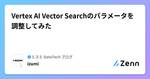

ミスミ DataTech ブログのフィード
https://zenn.dev/p/msmtec
株式会社ミスミグループ本社のデータサイエンティスト・内製開発を行うAI・ITエンジニア中心にデータに尖った観点で情報発信を行う Publication です。各記事の内容は個人の意見であり、企業を代表するものではございません。
フィード

Vertex AI Vector Searchのパラメータを調整してみた
ミスミ DataTech ブログのフィード
はじめにこんにちは。ミスミグループ本社Gateway推進本部のizumiです。当社ECサイトの検索システム開発を担当しています。本記事ではVertex AI Vector Searchの近似最近傍探索に用いるパラメータの調整方法を簡単にご紹介したいと思います。なお、インデックスデータの作成方法、Vector Searchへのデプロイ方法は省略しております。 Vertex AI Vector SearchとはVertex AI Vector Searchとは、Google Cloudが提供しているベクトル検索のサービスです。Google検索、YouTubeなどのGoog...
5日前
AWSからGoogle Cloudへ移行する際にマイクロサービス化に取り組んだ話 1
1
ミスミ DataTech ブログのフィード
はじめにこんにちは。ミスミグループ本社 Gateway推進本部のshimozonoです。検索システムの開発を担当しています。先日、弊社ECサイトの検索エンジンのバックエンドの一部（以下、ベクトル検索基盤と呼びます）を、AWSからGoogle Cloudへ移行しました。この記事では、その移行において取り組んだマイクロサービス化についてご紹介します。 移行前の構成移行前のベクトル検索基盤はAWS上で構築されており、以下のような構成でした。 システム構成図(移行前)API Gatewayクライアントからのリクエストを受け付け、SageMakerへ振り分け。...
12日前

ベクトル検索のドメイン特化における検索キーワードの有用性
ミスミ DataTech ブログのフィード
はじめに当社はECサイトを運営しており、ユーザーが求める商品を迅速に見つけられるよう検索機能の改善に努めています。特に、曖昧なキーワードでの検索にも対応するためにベクトル検索技術の導入に力を入れております。この記事では、その取り組みの中で活用している技術をご紹介します。 課題検索エンジンが直面する課題の一つとして、検索したい商品名がわからず、曖昧で不明確なキーワードで検索されることがあります。文字列一致で検索する全文検索では、曖昧で不明確な検索キーワードに対応するために辞書を活用します。検索キーワードや検索対象文書の文字を辞書で拡張させて、検索にヒットしやすくさせます。...
23日前
日経クロステックに記事を寄稿しました！
ミスミ DataTech ブログのフィード
皆さん、こんにちは！Gateway推進本部*の技術統括をしています中田です。この度、日経クロステックACTIVEに『「欲しい商品」を探せない要改善のECサイト、検索精度を高めるには？』という記事を寄稿し、2024/7/1に公開されました。この記事では、ECサイトにおける検索機能の問題点とその改善方法について従来と異なる視点となるベクトル検索観点で解説しています。ElasticSearch等を使った際の伝統的な方法での限界を感じている方は、ぜひこの記事をチェックしてください！微力でもお力添えできれば幸いです。記事はこちら『「欲しい商品」を探せない要改善のECサイト、検索精度を高め...
1ヶ月前
STSを用いずに、S3からGCSへのファイル転送を実現した話
ミスミ DataTech ブログのフィード
はじめにGoogle Cloud Platform（GCP）のStorage Transfer Service（STS）をご存知でしょうか？これはGoogleが提供する、異なるストレージシステム間でのデータ移行を自動化するためのサービスです。特に、大量のデータをGoogle Cloud Storage（GCS）に移行したい場合や、定期的なバックアップが必要な場合に適しています。STSは、単発の転送を行う「Batch」転送と、AWSなどの他のクラウドサービスのイベントを検知して転送を実行する「Event Driven」転送の二つのモードを提供しています。コードを記述することなく使用で...
2ヶ月前
テックブログ始めました
ミスミ DataTech ブログのフィード
はじめにこんにちは、皆さん！ ”ミスミDataTechブログ" へようこそ。Gateway推進本部*の技術統括をしています中田です。本ブログは、株式会社ミスミのGateway推進本部に所属するIT・AI技術者を中心に、私たちの技術的な挑戦や学び、最新のプロジェクトについてシェアしていきます。ECサイトを主とした接点での顧客体験を大きく変える為に、様々な実験的なPJを行っている組織です。 ミスミDataTechブログの目的このブログを始めるにあたり、二つの大きな目的があります。 ITエンジニアの採用私たちは常に新しい才能を求めています。しかしながら、エンジニア採用...
2ヶ月前